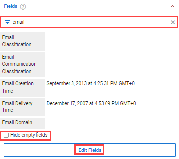

Warning signs indicate different properties for duplicates.
UTC times for container files (like zip, tar, rar, etc.) might not be the actual UTC times.
Hide empty properties with the checkbox at the bottom.
Fields show the metadata of the document displayed in Document View. Fields are auto-filled with the metadata values associated with the document.
To filter Fields, enter key words in the filter bar.
To hide Fields, select Hide empty fields.
To edit the metadata values assigned to one or more Fields, select Edit Fields.

UTC times assigned to container files (zip, tar, rar, etc.) might not be their actual UTC times. Local time can be stored and treated as the UTC time.
Warning signs will alert you of duplicates with different metavalues/properties.